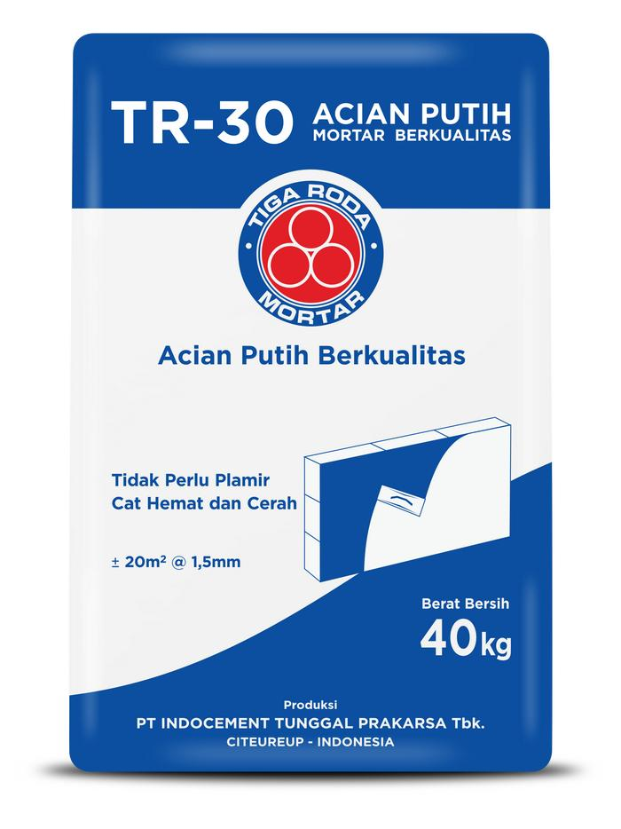
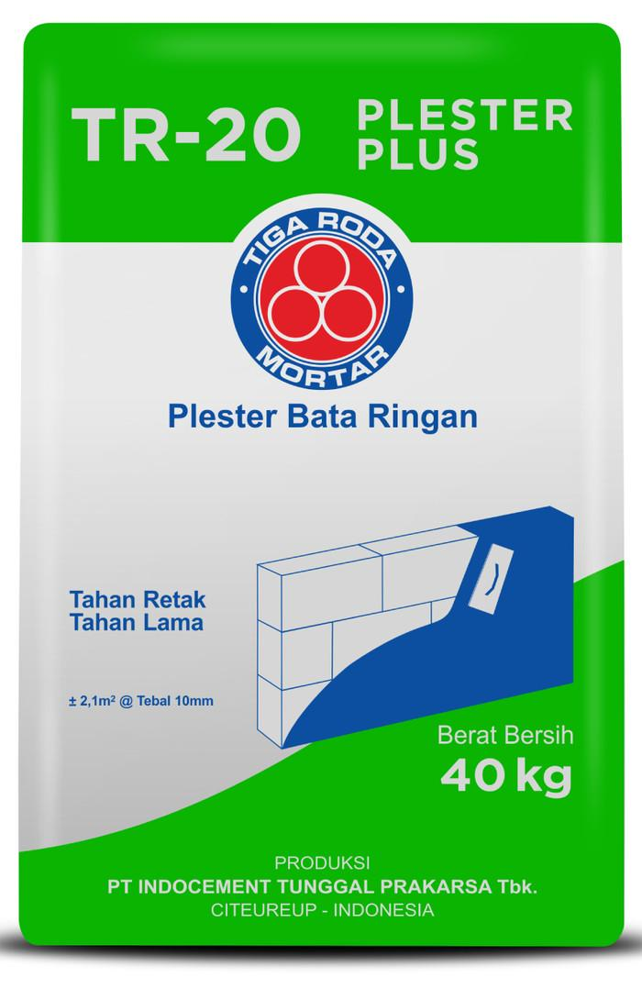
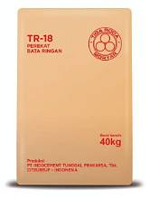
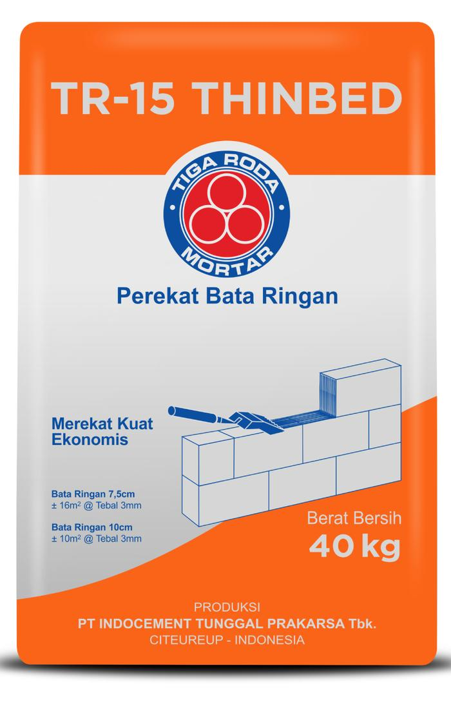
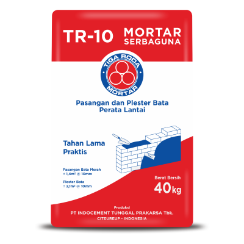
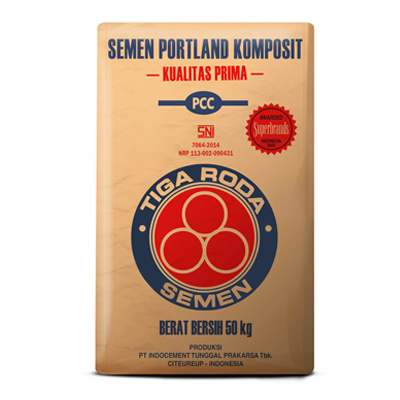

.png)
PT Indocement Tunggal Prakarsa Tbk.
Unit Cirebon
"Berkualitas dalam Produk, Berkelanjutan dalam Operasional"
Sejarah / Tentang Perusahaan
Profil dan Perjalanan PT Indocement Tunggal Prakarsa Tbk. Unit Cirebon
Sejarah PT Indocement Tunggal Prakarsa Tbk. Unit Cirebon

PT Indocement Tunggal Prakarsa Tbk. merupakan salah satu perusahaan produsen semen terkemuka di Indonesia yang dikenal melalui produk Semen Tiga Roda. Kompleks Pabrik Cirebon yang berlokasi di Palimanan, Kabupaten Cirebon, Jawa Barat, merupakan bagian dari jaringan fasilitas produksi Indocement yang berperan dalam memenuhi kebutuhan semen di Indonesia.
- 1975 (Awal Berdirinya Perusahaan) Cikal bakal Indocement bermula dari berdirinya PT Distinct Indonesia Cement Enterprise (DICE), yang mengoperasikan pabrik semen di Citeureup, Jawa Barat.
- 1985 (Pembentukan Indocement) Enam perusahaan semen melakukan konsolidasi dan membentuk PT Indocement Tunggal Prakarsa sebagai satu entitas perusahaan.
- 1989 (Menjadi Perusahaan Publik) Indocement resmi menjadi perusahaan publik dan mencatatkan sahamnya di Bursa Efek Indonesia dengan kode saham INTP.
- 1991 (Akuisisi Pabrik Cirebon) Indocement mengakuisisi pabrik semen milik PT Tridaya Manunggal Perkasa di Cirebon yang kemudian dikenal sebagai Plant 9.
- 1996 (Pengembangan Plant 10) Indocement menyelesaikan pembangunan Plant 10 di Kompleks Pabrik Cirebon untuk meningkatkan kapasitas produksi semen.
- 2001 (Perkembangan Kepemilikan) HeidelbergCement Group, yang kini dikenal sebagai Heidelberg Materials AG, menjadi pemegang saham mayoritas Indocement.
- 2012 (Pencapaian di Bidang Lingkungan) Kompleks Pabrik Cirebon memperoleh peringkat Emas PROPER sebagai pengakuan atas kinerja pengelolaan lingkungan pada periode penilaian tersebut.
- 2019 (Sertifikat Industri Hijau) Kompleks Pabrik Cirebon memperoleh Sertifikat Industri Hijau dari Kementerian Perindustrian Republik Indonesia.
- 2022 (Pengakuan Produk Ramah Lingkungan) Produk PCC Tiga Roda dari Kompleks Pabrik Cirebon memperoleh Green Label Indonesia.
- 2025 (Pencapaian Pengelolaan Lingkungan) Kompleks Pabrik Cirebon kembali memperoleh peringkat Emas PROPER pada 24 Februari 2025.
Tentang Perusahaan
PT Indocement Tunggal Prakarsa Tbk. merupakan perusahaan manufaktur yang bergerak dalam industri semen. Melalui merek Semen Tiga Roda, perusahaan menyediakan berbagai produk untuk memenuhi kebutuhan pembangunan dan konstruksi di Indonesia.
- Bergerak dalam industri manufaktur semen dengan produk unggulan Semen Tiga Roda.
- Memiliki Kompleks Pabrik Cirebon yang berlokasi di Palimanan, Kabupaten Cirebon, Jawa Barat.
- Menjalankan kegiatan produksi dengan memperhatikan kualitas produk, efisiensi operasional, dan pengelolaan lingkungan.
Kompleks Pabrik Cirebon merupakan salah satu fasilitas produksi Indocement yang terdiri atas Plant 9 dan Plant 10. Keberadaan fasilitas ini mendukung kegiatan manufaktur perusahaan dalam memenuhi kebutuhan pasar serta memperkuat kontribusi Indocement terhadap industri semen nasional.

Visi
Menjadi Produsen Semen Terkemuka dan Pilihan Pelanggan di Indonesia.
- Produsen Semen Terkemuka dan Terpercaya di Indonesia.
- Pemain RMC Terpercaya di Jawa dengan Jaringan di Kalimantan, Bali, dan Sulawesi Selatan.
- Pemain Agregat Terpercaya di Jabodetabek dengan Jaringan di Jawa Tengah dan Sulawesi.
- Pemain Mortar Ternama di Jawa dan Sumatra bagian Selatan.
Misi
Kami berkecimpung dalam bisnis penyediaan semen ramah lingkungan dan bahan bangunan bermutu tinggi yang mengutamakan solusi untuk pelanggan dengan cara yang mendorong peningkatan profitabilitas sekaligus mengedepankan aspek lingkungan, sosial, dan tata kelola (LST) dan Digitalisasi.
Struktur Perusahaan
Fungsi Organisasi dalam Kegiatan Operasional Kompleks Pabrik Cirebon

Divisi Produksi
Pengelolaan Proses Manufaktur
Divisi Teknik
Pemeliharaan dan Keandalan Fasilitas
Divisi Pendukung
Fungsi Pendukung OperasionalStruktur Organisasi
Struktur Organisasi PT Indocement Unit Cirebon

Produk
Produk Semen dan Mortar Tiga Roda

TR-30 Acian Putih
Mortar acian putih berkualitas

TR-20 Plester Plus
Plester bata ringan

TR-18
Perekat bata ringan

TR-15 Thinbed
Perekat bata ringan

TR-10 Mortar Serbaguna
Pasangan bata dan perata lantai

White Cement
Semen putih 40 kg

Oil Well Cement
Semen untuk sumur minyak

Semen Portland Komposit
PCC kemasan 50 kg
Maps / Alamat Perusahaan
Lokasi Kompleks Pabrik Cirebon
Alamat Pabrik
Kompleks Pabrik Cirebon
PT Indocement Tunggal Prakarsa Tbk.
Palimanan, Kabupaten Cirebon,
Jawa Barat, Indonesia
Sosial Media
Ikuti Informasi dan Kegiatan Indocement